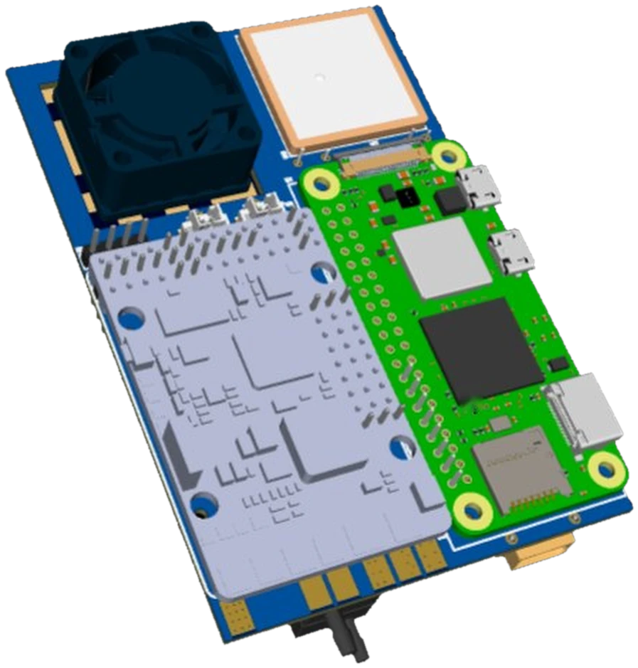
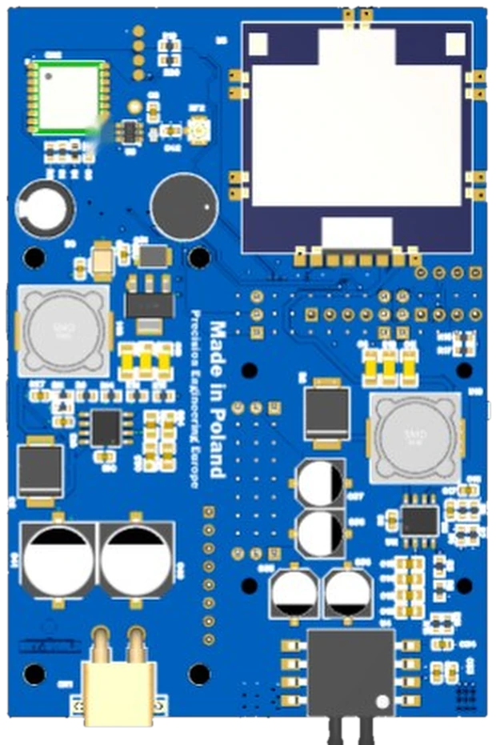
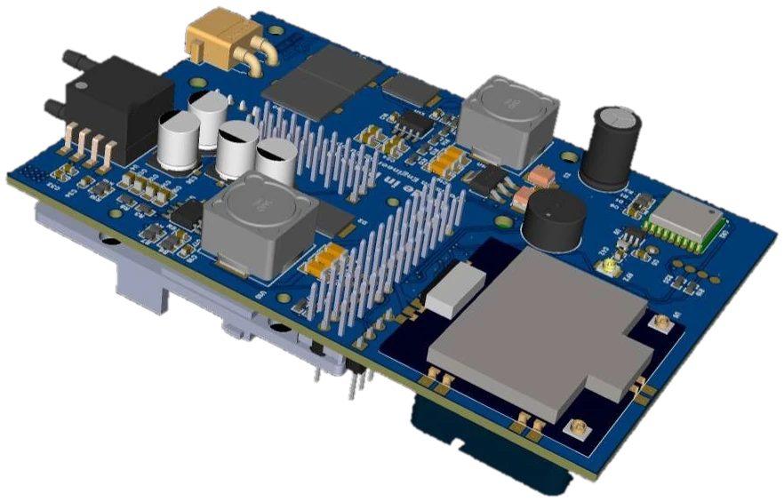

We design the boards, the links and the logic, not just the airframe around them
Off-the-shelf systems fail in harsh environments through interference and signal loss. We design isolated electronics that tie autopilot, companion computers and encrypted comms together.
PCBs, RF datalinks and firmware are designed in-house, so hardware and software develop as one product.
What we deliver
Eight electronics and embedded services, built into one architecture
01Flight control
Flight control architecture & autopilot integration
Flight controllers selected, configured and integrated around the airframe and mission, with the redundancy and failsafe behaviour the operation requires.
Hardware failsafe: watchdogs and independent safety triggers

PIXI-NAV · companion stack
02Onboard compute
Companion computers & onboard processing
Embedded companion computers added to the flight controller for vision, mapping and decision-making in real time, without compromising flight-critical code.
Companion-computer selection and integration
Flight-controller to computer interfaces
Thermal design and cooling
Power conditioning and shutdown handling

PIXI-NAV · top layout
03Electronics
Custom PCB design
Boards designed in-house, from schematic to multi-layer layout and prototype assembly, shaped to the airframe instead of the airframe being shaped around a catalogue board.
Schematic capture and component selection
Multi-layer and mixed-signal layout
RF, power and high-speed design
Prototype assembly and bring-up
Production files and bill of materials
04Communications
RF datalinks & encrypted communications
Long-range command, telemetry and video links engineered for range, latency and security, with the flexibility to operate across several frequency bands.
433 MHz, 868 MHz, 2.4 GHz and 5.8 GHz bands
Point-to-point, mesh and repeater topologies
AES-256 / WPA2 link encryption
Antenna selection, placement and detachable connectors
05Signal integrity
EMI isolation & signal integrity
The most common failure in compact platforms is the radio disturbing the autopilot and the GPS. We isolate noisy and sensitive circuits physically and electrically, by design.
RF and autopilot separation
Grounding, filtering and shielding strategy
GNSS protection from datalink noise
Layout rules and design reviews for noise-sensitive circuits
06Payloads
Sensor & payload integration
Heavy sensors connected, powered and time-synchronised with the navigation system, so the data they collect is accurate and geo-referenced.
LiDAR, thermal, EO/IR and multispectral sensors
Gimbal power and data interfaces
Time synchronisation and geo-tagging
Mechanical, power and data interfaces
07Power
Power distribution & redundancy
Smart power distribution with protection and backup paths, so a single fault does not become a lost aircraft.
Smart PDB design with over-current protection
Redundant power paths and battery management
Voltage regulation and noise control
Power-budget analysis
08Firmware
Embedded firmware & drivers
Firmware and drivers written for the hardware we design, giving every board and sensor a defined, testable behaviour on the aircraft.
Microcontroller firmware and bootloaders
Sensor and peripheral drivers
MAVLink and custom protocols
CAN, UART, SPI, I2C, Ethernet and USB interfaces
Architecture & payload fusion
Engineered for signal integrity & zero-failure reliability
Flight controller, companion computer, datalink and payloads share one isolated architecture, designed so that each part can do its job without disturbing the others.
Flight controllers
Custom flight controllers
Pixhawk / CubePilot
PX4 & ArduPilot
Interfaces & buses
UART · SPI · I2C · CAN
Ethernet · USB
MAVLink protocol
Integrated payloads
LiDAR
Thermal & EO/IR gimbals
Multispectral sensors
Reference design
PIXI-NAV: our UAV autopilot and datalink system
PIXI shows the kind of system we engineer: autopilot, long-range encrypted datalink and sensor fusion on a single board.

PIXI-NAV · 3D view
Flight functions
Autonomous flight along waypoints
Automatic take-off and landing
Return-to-base mode
Altitude and heading hold
“Follow me” mode (tracking a ground station)
Link-loss protection (failsafe)
The system fuses data from the IMU, GPS, barometer, magnetometer and airspeed sensor to determine the aircraft’s current state, enabling full control and real-time data transmission.
Whether you are developing a new flight platform or need specialist sensors integrated without electronic interference, our team is ready to build the complete system.